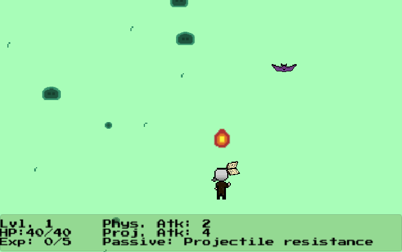
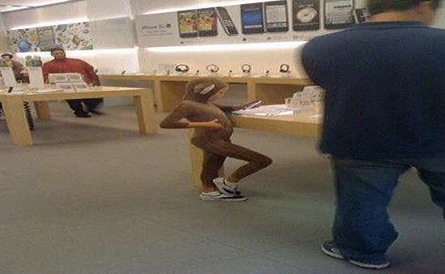
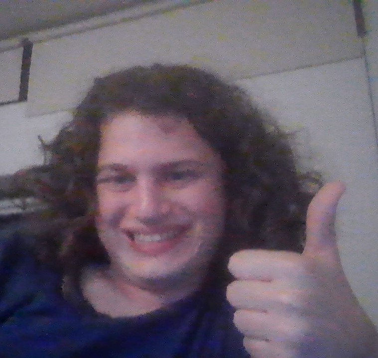
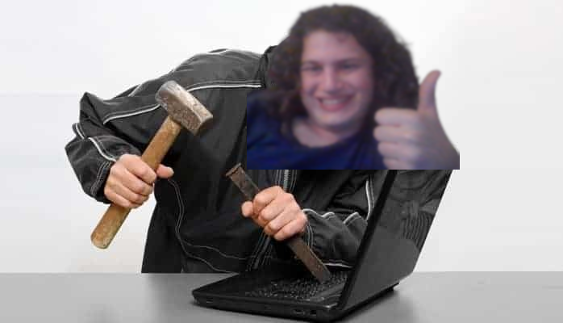
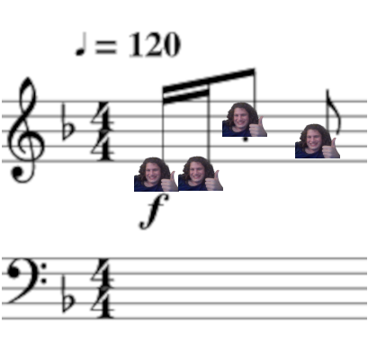
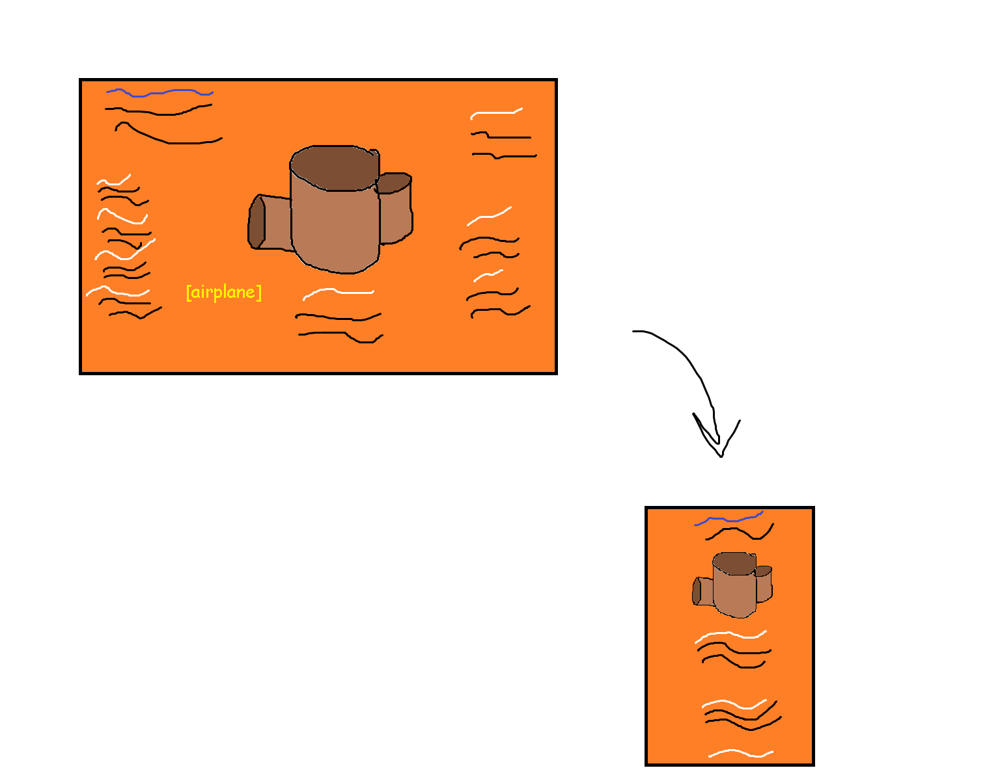
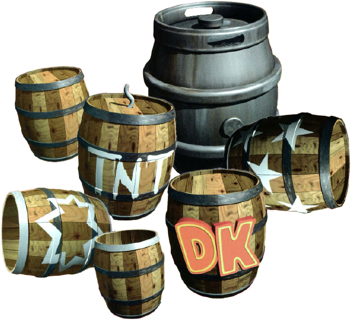
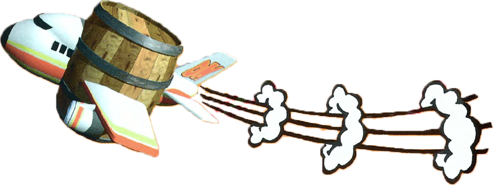

The center collage now looks like a collage. It's a bit messy still, but realistically this is the best I can do with my current CSS knowledge and time constraints. There are also now different layouts, with the mid-sized and narrow layouts being far simpler. There are no more Donkey Kong references anymore (naturally), the header has a fun catchphrase, and with a bit of refining with knowledge I get late in the semester and future projects to fill that pesky third project with no project, I can easily use this as a funky-looking portfolio.





I sure learned something about overscoping myself and overcomplicating my own work. Between this project, my IGME 202 project, midterms, and other work that I had (and still have!) these past two weeks, I was mentally drained and very ready to turn it in with a couple small issues by the time this was over, including some very cool and awesome temporary images. As you saw in my Phase 1 documentation, this is really unlike me, and in circumstances like these I would ask for a longer extension than 48 hours, but I've worked myself to the bone and I think I can give myself a break this one time. I can't keep working on this single project forever, and if I gave myself more time I'd just burn myself out more than I already have. I'd like to give a shoutout specifically to the issue where images wouldn't resize with the browser window. I could not figure out that bug, and I won't try to until I have more time. I would also like to shout out Vinny and Joel of streaming group Vinesauce, whose Twitch VODs kept me sane throughout the process. Now if you'll excuse me, I'm very tired and really want to check out NieR: Automata now that it's on Switch. Thanks for reading my second rant. I don't have a funny video this time, but I still wish you a good night or day or whenever you read this (:
My goal overall is to make the funkiest portfolio site possible that's also not visually designed awfully. This will be done by replicating the "Barrels and Kegs" section from the Donkey Kong Country manual (see links). The target audience is anyone who would see my portfolio, generally game development studios and other programming workplaces.
The plan is simple in theory: relocate the header and barrel (or whatever I replace that with) to the top quarter or so of the screen and keep it consistently there, while the text surrounding the barrel becomes akin to a vertically scrolling list taking up the rest of the screen real estate, with the barrel plane relocating to the bottom of that (see the accompanying sketch).



I only realized how extraordinarily complicated this design was and how messy my execution of it was (especially in regards to text wrapping around the barrels, which I'm not sure is even possible with Grid) at a point where fixing it would require a complete overhaul of the layout, which would itself eat into time I don't quite have (and no, an extension wouldn't work for me either, otherwise I would have requested one). Needless to say, with midterm week coming to a close soon and given my average workload, I will actually have time to redo the CSS correctly, at which point I might resubmit Phase 1. Less so for the grade - I've accepted that I kinda botched the assignment and will face whatever grade I end up getting - but moreso for myself because I'm not one to be satisfied with submitting something half-baked and presenting it as final. You can re-grade it if you want, and if you do, think of it like a post-launch update. Anywho, thanks for reading my little rant. Here's a funny video I found recently for your troubles :)